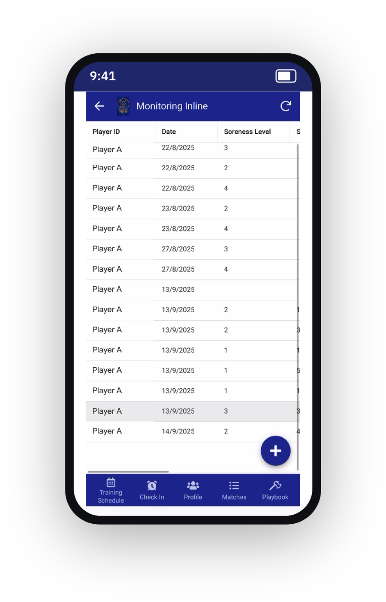

Sports Scientist · Performance Analysis
Hi, I'm Isabella Sale.
A sports scientist specialising in performance analysis — I turn athlete GPS, force-plate and wearable data into load monitoring, session reports and readiness that coaches can act on.

KM/H TOP SPEED 796
PLAYER LOAD au 167
MAX HR bpm
About
A sports scientist who codes.
I hold a BSc (Hons) in Sport & Exercise Science from the University of Bath, where my dissertation used 2000 Hz force-plate data and inferential statistics to test how jump performance relates to change-of-direction braking. That's where I learned to take a raw signal all the way to a defensible decision.
Since then I've turned raw Catapult GPS into session reports, built an athlete-monitoring app my own lacrosse team uses every week, and I work day-to-day in Python, Power BI and Excel. Because I'm an athlete myself, I care about the space between the data and the decision — I build things coaches and players will actually use, not dashboards that only look clever.
I'm looking for a performance or sports-data analyst role where sport-science domain knowledge and data skills both count.
Areas of Interest
What I love working on.
Performance analysis and athlete monitoring — and the tools that turn raw data into decisions.
Performance Analysis
Turning training and match data into the physical reports coaches actually use.
GPS & Tracking
10 Hz Catapult data into intensity zones, Player Load and sprint demands.
Athlete Monitoring
Wellness, ACWR and readiness — flagging injury risk before it becomes injury.
Python
Cleaning, modelling and automating analysis pipelines end-to-end.
Power BI & Dashboards
Interactive squad dashboards staff can explore, filter and drill into.
Statistics & Research
Force-plate signal processing and inferential stats, from my dissertation onward.
Selected Projects
A look at my recent work.
Real analysis on live athlete data, a team app I built, and my force-plate dissertation — plus two method demos, clearly labelled. Click any card for the full case study.
 Real data
Real dataGPS Session Physical Report
A raw 36,000-row Catapult export → a one-page physical summary.
View case study → Real data
Real dataInteractive Session Dashboard
A live, filterable dashboard — click any phase to drill in.
View case study → Primary research
Primary researchForce-Plate Dissertation
Does jump-test power transfer to change-of-direction braking? (r = −0.55)
View case study →
Real projectLacrosse Team App
A mobile app my squad uses every week, built on relational data.
View case study → Method demo
Method demoTraining Load Monitor (ACWR)
Rolling ACWR flagging athlete-weeks outside the safe load range.
View case study → Method demo
Method demoReadiness & Recovery Tracker
Five morning inputs → one readiness score and a red/amber/green grid.
View case study →Approach
A repeatable path from messy export to a decision on the training ground.
Wrangle the feed
GPS, wearable and session logs cleaned and joined into one tidy dataset.
Metrics that mean something
Distance, speed zones, Player Load, ACWR and readiness — benchmarked per athlete.
Put it where it’s used
A dashboard, tracker or report staff read in seconds — not the spreadsheet behind it.
Available for work
Have tracking data that isn’t earning its keep?
I turn raw GPS, wearable and match data into monitoring, reports and dashboards your staff will actually use. Open to freelance projects and analyst roles.